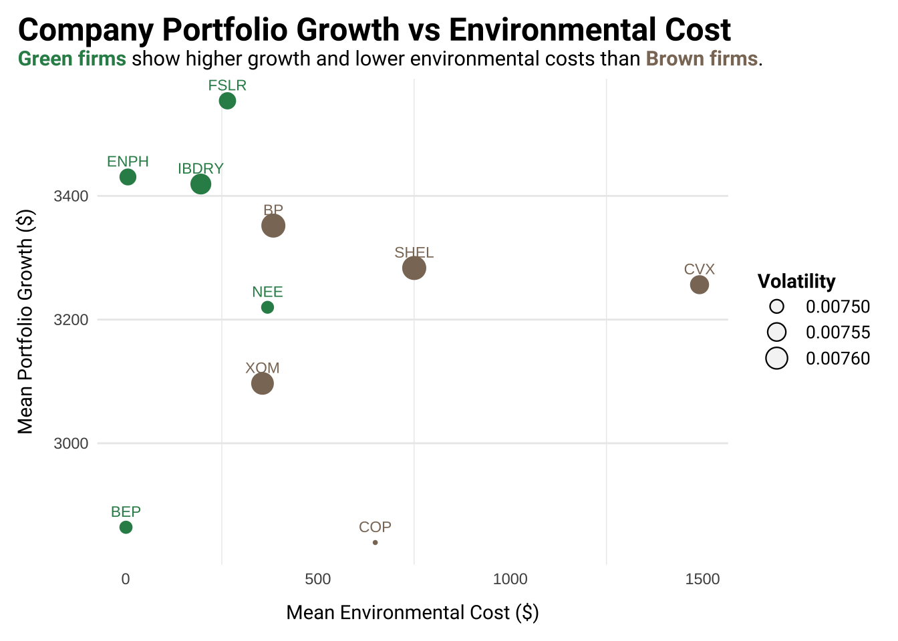
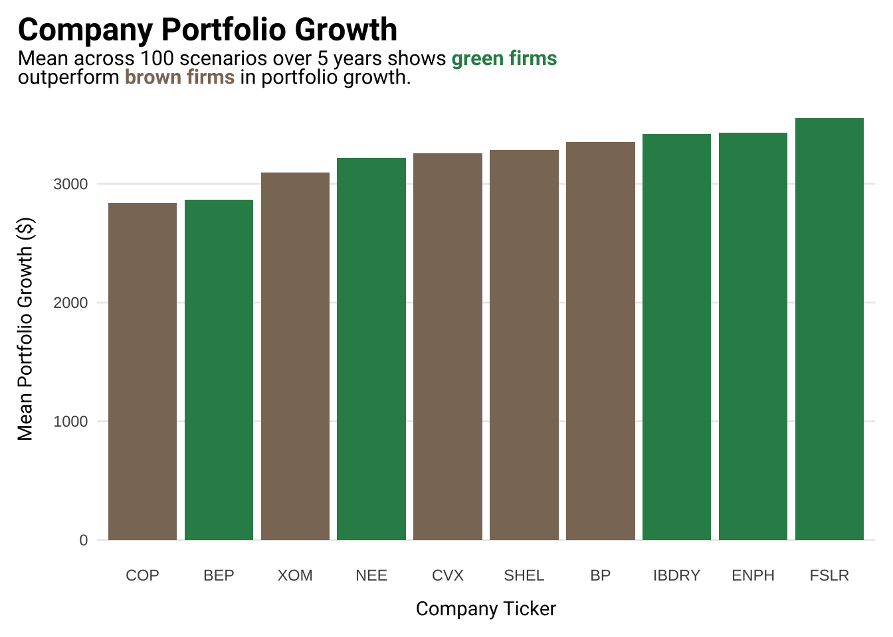
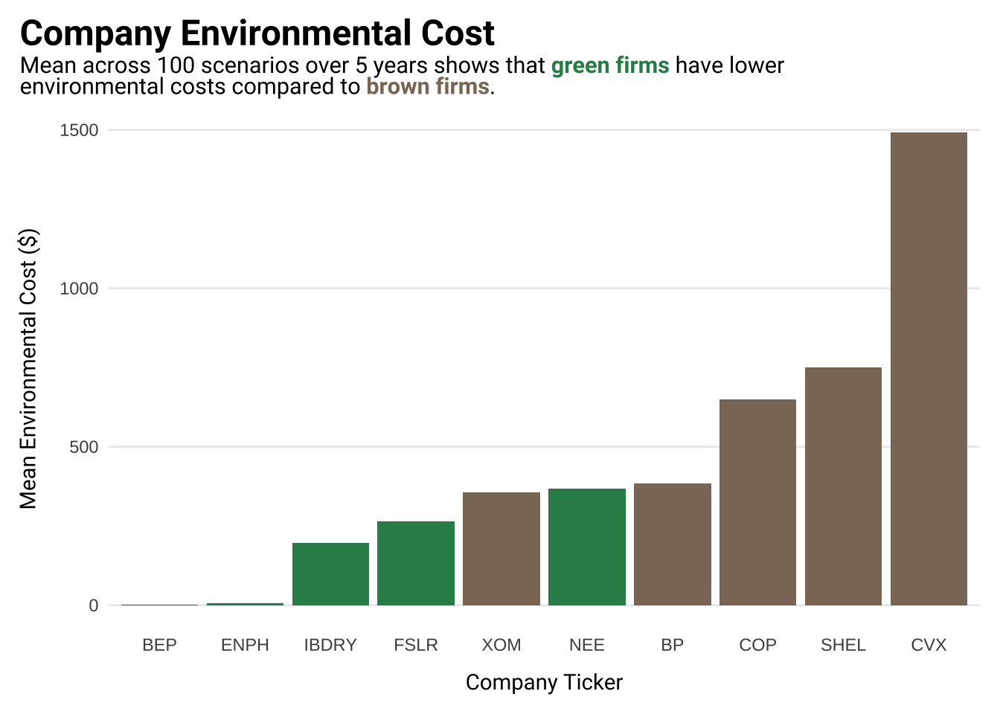

Monte Carlo simulation of 100 investment portfolios to assess the financial and environmental performance of green versus brown investments
Author
Natalie Smith
Published
December 3, 2024
This is an excerpt from a larger report examining the trade-offs of investing in green companies and divesting from brown companies, developed for a Cost-Benefit Analysis course.
Introduction
This analysis examines the trade-offs involved in investing in a reduced-carbon portfolio, focusing on the balance between financial returns, environmental costs, and investment risk. Additionally we explored the potential for carbon leakage into brown companies, a critical consideration for understanding the broader environmental impacts of green investing. To address challenges often linked to greenwashing in ESG initiatives, we focused our analysis on renewable energy companies with verifiable, sustainability-driven operations. Using an ex-ante cost-benefit analysis, we assessed the financial and environmental implications of green investments, offering insights into the sustainability trade-offs involved.
Methods
We examined a diversified portfolio consisting of ten companies: five green firms, which prioritize renewable energy, and five brown firms, which are focused on fossil fuels. This composition allowed for direct comparisons of financial returns and environmental costs across contrasting sectors. The brown firms analyzed were Exxon Mobil, Chevron, BP, ConocoPhillips, and Shell, while the green firms included NextEra Energy, Iberdrola, Enphase Energy, Brookfield Renewable Partners, and First Solar. The environmental metrics for each company were calculated based on their total greenhouse gas emissions (Scope 1, 2, and 3 emissions) for 2023 (measured in MT CO₂e) and the company’s total revenue for the year, as sourced from company reports. Using those figures, we derived an emissions intensity of CO₂e per revenue unit for each company.
Data Sources and Timeframe
Historical adjusted closing prices (ACP) for each company in the portfolio were sourced from Yahoo Finance. ACP, which adjusts for corporate actions such as dividends and stock splits, provides a more accurate measure of stock value over time. A five-year timeframe (2018–2023) was selected to balance historical stock performance with available greenhouse gas (GHG) emissions data, creating a solid foundation for our analysis.
Code
# Load librarieslibrary(tidyverse)library(quantmod)library(doBy) library(scales)library(showtext) library(glue)library(ggtext)library(sf)library(here)#......................import Google fonts.......................# `name` is the name of the font as it appears in Google Fonts# `family` is the user-specified id that you'll use to apply a font in your ggpplotfont_add_google(name ="Roboto", family ="rob")font_add_google(name ="Open Sans", family ="open_sans")# turn show text onshowtext_auto()
Code
# Set parameters#define the date rangestart_date <-"2018-01-01"end_date <-"2023-12-31"# Define company tickerstickers <-c("XOM", "CVX", "BP", "COP", "SHEL", "NEE", "IBDRY", "ENPH", "BEP", "FSLR")# Define carbon intensities for each company (in tonnes of CO2 per unit of revenue)emissions_intensity <-c(XOM =0.002, # Exxon MobilCVX =0.008, # ChevronBP =0.002, # BPCOP =0.004, # ConocoPhillipsSHEL =0.004, # ShellNEE =0.002, # NextEra EnergyIBDRY =0.001, ENPH =0.00003, # Enphase EnergyBEP =0.000005, # Brookfield Renewable PartnersFSLR =0.0013# First Solar)# Social Cost of Carbon (SCC) in dollars per tonne of CO2SCC <-185
Financial Analysis
All stock data were compiled into a single data frame in RStudio (see Appendix A for full code). Daily returns were calculated to assess day-to-day performance. These returns, representing the percentage change in ACP from one day to the next, were generated using the ROC() function with type = “discrete,” ensuring returns were calculated using the formula:
Where Pt is the current adjusted close price, and Pt-1 is the previous day’s adjusted close price. Mean daily returns were annualized by multiplying by 252, the typical number of trading days per year. Volatility, the rate at which the price of a stock fluctuates over time, was then calculated as the standard deviation of annual returns. The result was divided by the square root of 12 to convert this to a monthly measure.
Code
#get data to build portfolios#getSymbols = fetches historical stock data for these tickers from Yahoo Financefor (ticker in tickers) {getSymbols(ticker, src ="yahoo", from = start_date, to = end_date)}# Merge adjusted closing prices for all tickers into a single data frame.prices <-do.call(merge, lapply(tickers, function(ticker) Ad(get(ticker))))# Calculate daily returns for each stock returns <-na.omit(ROC(prices, type ="discrete"))# Calculate annualized average return.avg_return <-mean(returns) *252# Calculate monthly volatility (standard deviation of returns).sd_og <-sd(returns)sd <- sd_og /sqrt(12)
Simulation of Portfolio Performance
A Monte Carlo simulation was conducted to model financial and environmental outcomes across 100 randomized scenarios over a 5-year period (60 months). The simulation begins with an initial investment of $10,000, which was randomly allocated across a portfolio of 10 companies. These allocations were normalized to ensure they summed to 1, ensuring proportional distribution across the portfolio. Monthly returns for each company were generated using a normal distribution based on historical average returns. To reflect monthly values, the mean return was divided by 12, and the standard deviation was adjusted by the square root of 12. Portfolio performance was tracked throughout the simulation by applying monthly portfolio returns, calculated as the weighted sum of company-level returns based on their allocation to the portfolio’s value. Individual company portfolio values were also tracked to assess their contributions to the overall portfolio performance. At the end of each simulation, the cumulative return was determined as the percentage change in the portfolio’s value relative to the initial investment, representing total gain or loss over the 5-year period.
Emissions were calculated for each company by multiplying its allocated portion of the initial investment by its emissions intensity, measured as CO2emission per unit of revenue. These emissions were then multiplied by the Social Cost of Carbon (SCC). The total environmental cost for each scenario was obtained by summing the costs across all companies in the portfolio.
Volatility was calculated at both the company and portfolio levels throughout the simulation. Company-level volatility was determined by annualizing the standard deviation of monthly returns, while portfolio volatility represented the overall risk, combining all companies’ performance. After completing all 100 scenarios, results were aggregated to analyze trends in financial returns, environmental costs, and volatility, providing insights into the trade-offs between financial and environmental metrics for green and brown firms.
Code
#set up initial variablesset.seed(123) #for reproducibilityinitial_investment <-10000# starting investment is 10kn_scenarios <-100#number of scenarios to simulaten_months <-60#simulation for 5 years (60 months)# Initialize results list to store each scenario's data before combiningresults_list <-vector("list", n_scenarios)
Code
# Run scenarios to simulate random allocationfor (i in1:n_scenarios) {# Random allocation for each company allocation <-runif(length(tickers)) allocation <- allocation /sum(allocation) # Normalize to sum to 1# Generate monthly returns for each company company_monthly_returns <-matrix(rnorm(n_months *length(tickers), avg_return /12, sd /sqrt(12)),nrow = n_months, ncol =length(tickers))# Initialize portfolio value and returns portfolio_value <- initial_investment monthly_portfolio_returns <-numeric(n_months)# Initialize matrix and vectors company_final_returns <-numeric(length(tickers)) company_portfolio_values <-matrix(0, nrow = n_months, ncol =length(tickers)) emissions <- initial_investment * allocation * emissions_intensity environmental_cost_allocation <- emissions * SCC# Update portfolio value based on monthly returns and allocationfor (j in1:n_months) { company_returns_at_j <- company_monthly_returns[j, ] # Returns for all companies at month j# Update portfolio and monthly return portfolio_monthly_return <-sum(company_returns_at_j * allocation) portfolio_value <- portfolio_value * (1+ portfolio_monthly_return) monthly_portfolio_returns[j] <- portfolio_monthly_return# Calculate individual company portfolio valuesfor (k in1:length(tickers)) {if (j ==1) { company_portfolio_values[j, k] <- initial_investment * allocation[k] * (1+ company_returns_at_j[k]) } else { company_portfolio_values[j, k] <- company_portfolio_values[j -1, k] * (1+ company_returns_at_j[k]) } }# Accumulate final returns company_final_returns <- company_final_returns + company_returns_at_j * allocation }# Final calculations outside the monthly loop total_return <- (portfolio_value - initial_investment) / initial_investment total_enviro_cost_scenario <-sum(environmental_cost_allocation) company_final_portfolio_values <- company_portfolio_values[n_months, ]# Calculate volatilities company_volatilities <-apply(company_monthly_returns, 2, sd) *sqrt(12) # Annualize portfolio_volatility <-sd(monthly_portfolio_returns) *sqrt(12)# Store results results_list[[i]] <-data.frame(scenario = i,company = tickers,allocation = allocation,final_portfolio_value = portfolio_value,total_return = total_return,company_final_return = company_final_returns,company_final_portfolio_value = company_final_portfolio_values,emissions = emissions,environmental_cost_allocation = environmental_cost_allocation,total_enviro_cost_scenario = total_enviro_cost_scenario,company_volatility = company_volatilities,scenario_volatility = portfolio_volatility )}# Combine all resultsresults <-do.call(rbind, results_list)
Results
This analysis examined the mean returns, portfolio growth, environmental costs, and volatility of a diversified portfolio consisting of ten companies—five green firms focused on renewable energy and five brown firms engaged in fossil fuels (Appendix A). The results highlight differences between the two categories, particularly regarding portfolio growth and environmental cost, while volatility remained relatively consistent across both groups ( Figure 1).
Code
# visualization parameters: # List of green and brown companiesgreen_firms <-c("NEE", "IBDRY", "ENPH", "BEP", "FSLR")brown_firms <-c("XOM", "CVX", "BP", "COP", "SHEL")# df for company level resultscompany_summary <- results %>%group_by(company) %>%summarise(mean_company_return =mean(company_final_return, na.rm =TRUE),mean_company_final_portfolio_value =mean(company_final_portfolio_value, na.rm =TRUE),mean_enviro_cost =mean(environmental_cost_allocation, na.rm =TRUE),mean_volatility =mean(company_volatility, na.rm =TRUE) # Added for volatility ) %>%arrange(desc(mean_company_return)) # Sort by average returncompany_summary$firm_type <-ifelse( company_summary$company %in% green_firms, "Green",ifelse(company_summary$company %in% brown_firms, "Brown", "Other"))
Code
subtitle <- glue::glue(" <span style='color:#2E8B57;'>**Green firms**</span> show higher growth and lower environmental costs than <span style='color:#8B7765;'>**Brown firms**</span>.")# PLOTscatter_plot <-ggplot(company_summary, aes(x = mean_enviro_cost, y = mean_company_final_portfolio_value, size = mean_volatility, color = firm_type)) +geom_point(shape =16) +scale_color_manual(values =c("Green"="seagreen", "Brown"="peachpuff4")) +# Manually setting colors for firm typesgeom_text(aes(label = company), hjust =0.5, vjust =-1.0, size =3) +# Adding company namescoord_cartesian(clip ="off") +#LABs ----labs(title ="Company Portfolio Growth vs Environmental Cost",x ="Mean Environmental Cost ($)",y ="Mean Portfolio Growth ($)",subtitle = subtitle,size ="Volatility" ) +guides(color ="none") +#This hides the firm type legendguides(size =guide_legend(override.aes =list(shape =21,fill ="#F5F5F5",color ="black",stroke =0.6 ) )) +theme_minimal() +# CUSTOMIZE THEME --theme(plot.title.position ="plot", # plot title to the left# customize plot title textplot.title =element_text(family ="rob",face ="bold",size =18,color ="black", margin =margin(b =2) # Add small bottom margin ),# customize subtitle textplot.subtitle = ggtext::element_markdown(family ="rob",size =11.5,color ="black",margin =margin(t =0, r =0, b =5, l =0) ),# customize caption textplot.caption =element_text(family ="rob",face ="italic",color ="black",margin =margin(t =15, r =0, b =0, l =0)),# minimal grid panels - want to have some reference but not too boldpanel.grid.minor.y =element_blank(),panel.grid.major.x =element_blank(),# customize axis titlesaxis.title.y =element_text(family ="rob",margin =margin(r =10) ),axis.title.x =element_text(family ="rob",margin =margin(t =10) ),# Customizing legend - plot.legend isnt workinglegend.position ="right", legend.title =element_text(family ="rob", face ="bold", size =11),legend.text =element_text(family ="rob", size =10),legend.key.height =unit(1, "lines"),legend.key.width =unit(1.5, "lines"),legend.spacing.y =unit(2, "pt"),# update marginplot.margin =margin(t =10, r =10, b =10, l =10) ) scatter_plot

Figure 1. Portfolio Growth vs. Environmental Cost for Each Company. The relationship between each company’s mean environmental cost and portfolio growth, categorized by firm type. Green firms focused on renewable energy and Brown firms engaged in fossil fuels are represented by distinct colors. The size of each point represents the mean volatility, with larger points indicating higher volatility. The companies listed by abbreviation are as follows: FSLR (First Solar), ENPH (Enphase Energy), IBDRY (Iberdrola), BP (British Petroleum), SHEL (Shell), CVX (Chevron), NEE (NextEra Energy), XOM (ExxonMobil), BEP (Brookfield Renewable Partners), and COP (ConocoPhillips).
Code
# company_plot <- ggplot(company_summary, aes(x = reorder(company, mean_company_return), y = mean_company_return, fill = firm_type)) +# geom_bar(stat = "identity") +# scale_fill_manual(values = c("Green" = "seagreen", "Brown" = "peachpuff4")) +# labs(title = "Mean Company Return Across Scenarios",# x = "Company", y = "Mean Return", fill = "Firm Type") +# theme_minimal() +# theme(axis.text.x = element_text(angle = 90, hjust = 1))# # company_plot
Financial Performance
The companies exhibited relatively similar returns, with First Solar (FSLR) achieving the highest mean return at 13.02%, closely followed by Enphase (ENPH) and Iberdrola (IBDRY) at 12.57% and 12.52%, respectively. These results reflect positive growth for all companies, with portfolio values reaching between $3,094 and $3,551 (Figure 2), suggesting a moderate increase in value across the board. Notably, green firms, such as FSLR, ENPH, and IBDRY, displayed slightly higher returns compared to their Brown counterparts, with average portfolio growth ranging from $3,217 to $3,551.
Code
subtitle <- glue::glue(" Mean across 100 scenarios over 5 years shows <span style='color:#2E8B57;'>**green firms**</span> <br> outperform <span style='color:#8B7765;'>**brown firms**</span> in portfolio growth.")portfolio_value_plot <-ggplot(company_summary, aes(x =reorder(company, mean_company_final_portfolio_value), y = mean_company_final_portfolio_value, fill = firm_type)) +geom_bar(stat ="identity") +scale_fill_manual(values =c("Green"="seagreen", "Brown"="peachpuff4")) +#labs --labs(title ="Company Portfolio Growth",y ="Mean Portfolio Growth ($)", x ="Company Ticker",subtitle = subtitle ) +theme_minimal() +# CUSTOMIZE THEME --theme(plot.title.position ="plot", # plot title to the left# customize plot title textplot.title =element_text(family ="rob",face ="bold",size =18,color ="black", margin =margin(b =2) # Add small bottom margin ),# customize subtitle textplot.subtitle = ggtext::element_markdown(family ="rob",size =11.5,color ="black",margin =margin(t =0, r =0, b =5, l =0) ),# customize caption textplot.caption =element_text(family ="rob",face ="italic",color ="black",margin =margin(t =15, r =0, b =0, l =0)),# minimal grid panels - want to have some reference but not too boldpanel.grid.minor.y =element_blank(),panel.grid.major.x =element_blank(),# customize axis titlesaxis.title.y =element_text(family ="rob",margin =margin(r =10) ),axis.title.x =element_text(family ="rob",margin =margin(t =10) ),# Customizing legend - plot.legend isnt workinglegend.position ="none",# update marginplot.margin =margin(t =10, r =10, b =10, l =10) ) portfolio_value_plot

Figure 2. Mean Portfolio Growth Across 100 Scenarios Over 5 Years for Each Company. The average final portfolio value for each company, categorized as Green or Brown based on their portfolio growth. Green companies generally show higher portfolio growth compared to Brown companies. The companies listed by abbreviation in the plot are as follows: FSLR (First Solar), ENPH (Enphase Energy), IBDRY (Iberdrola), BP (British Petroleum), SHEL (Shell), CVX (Chevron), NEE (NextEra Energy), XOM (ExxonMobil), BEP (Brookfield Renewable Partners), and COP (ConocoPhillips).
Environmental Costs
Environmental costs showed a significant variation across the companies (Figure 3). The Green firms generally had lower environmental costs over the 5-year scenario, with the exception of NextEra Energy (NEE), which had a moderate environmental cost of $368.99. In contrast, the Brown firms, particularly Chevron (CVX) and Shell (SHEL), exhibited higher environmental costs, with CVX reaching $1,492.10 and SHEL at $750.26. BP and COP also demonstrated notable environmental costs, highlighting the greater ecological impact associated with these companies.
Code
subtitle <- glue::glue(" Mean across 100 scenarios over 5 years shows that <span style='color:#2E8B57;'>**green firms**</span> have lower <br> environmental costs compared to <span style='color:#8B7765;'>**brown firms**</span>.")# Plot Mean Environmental Costenvironmental_plot <-ggplot(company_summary, aes(x =reorder(company, mean_enviro_cost), y = mean_enviro_cost, fill = firm_type)) +geom_bar(stat ="identity") +scale_fill_manual(values =c("Green"="seagreen", "Brown"="peachpuff4")) +#labs - labs(title ="Company Environmental Cost", subtitle = subtitle,x ="Company Ticker", y ="Mean Environmental Cost ($)" ) +theme_minimal() +# CUSTOMIZE THEME --theme(plot.title.position ="plot", # plot title to the left# customize plot title textplot.title =element_text(family ="rob",face ="bold",size =18,color ="black", margin =margin(b =2) # Add small bottom margin ),# customize subtitle textplot.subtitle = ggtext::element_markdown(family ="rob",size =11.5,color ="black",margin =margin(t =0, r =0, b =5, l =0) ),# customize caption textplot.caption =element_text(family ="rob",face ="italic",color ="black",margin =margin(t =15, r =0, b =0, l =0)),# minimal grid panels - want to have some reference but not too boldpanel.grid.minor.y =element_blank(),panel.grid.major.x =element_blank(),# customize axis titlesaxis.title.y =element_text(family ="rob",margin =margin(r =10) ),axis.title.x =element_text(family ="rob",margin =margin(t =10) ),# Customizing legend - plot.legend isnt workinglegend.position ="none",# update marginplot.margin =margin(t =10, r =10, b =10, l =10) ) # Display the plotenvironmental_plot

Figure 3. Mean Environmental Cost Across 100 Scenarios Over 5 Years for Each Company. The average environmental cost for each company, categorized as Green or Brown based on their environmental impact. Green companies generally have lower environmental costs compared to Brown companies. The companies listed by abbreviation in the plot are as follows: FSLR (First Solar), ENPH (Enphase Energy), IBDRY (Iberdrola), BP (British Petroleum), SHEL (Shell), CVX (Chevron), NEE (NextEra Energy), XOM (ExxonMobil), BEP (Brookfield Renewable Partners), and COP (ConocoPhillips).
Volatility
Volatility across the companies was relatively consistent, with values ranging from 0.00747 to 0.00765. No significant differences were observed between green and brown firms, suggesting that market risk remained fairly stable across both categories.
Discussion (Abridged)
Our analysis shows that green companies, especially in renewable energy, outperform brown companies in both financial returns and environmental costs. As seen in Figure 1, top performers like First Solar, Enphase Energy, and Iberdrola achieved high portfolio growth, while maintaining lower environmental costs—less than $250,000 for Brookfield Energy Partners, Iberdrola, and Enphase Energy. In contrast, brown companies such as Chevron, ConocoPhillips, and Shell had significantly higher environmental costs, with Chevron’s costs more than three times higher than the green companies.
These findings highlight that green energy investments offer both strong financial returns and reduced ecological impact, making them a more sustainable choice as the renewable energy sector grows. A more robust discussion of the results, and shortcomings of green investing, including leakage, greenwashing, and differing scopes, are discussed in the full report.
References
Bauer, M., Huber, D., Rudebusch, G., & Wilms, O. (2022). Where is the carbon premium? Global performance of green and brown stocks. ScienceDirect.
Dawkin, D. (July, 19). Why Oil And Gas Stocks Keep Leaking Into ‘Green’ Investments. Retrieved from Forbes: 2019
Gormsen, N. J., Huber, K., & Oh, S. S. (2024). Climate capitalists (No. w32933). National Bureau of Economic Research.
Hartzmark, S. M., & Shue, K. (2022). Counterproductive sustainable investing: The impact elasticity of brown and green firms. Available at SSRN 4359282.
Jensen, S., Mohlin, K., Pittel, K., & Sterner, T. (2015). An Introduction to the Green Paradox: The Unintended Consequences of Climate Policies. University of Chicago Press Journals.
Appendix A
Code
# Create the kable table with renamed columns for environmental costslibrary(knitr)library(kableExtra)library(webshot)library(here)company_kable <- company_summary %>%kable(caption ="Company Summary over 100 Scenarios and 5 Years",col.names =c("Company", "Mean Return (%)", "Mean Portfolio Growth ($)", "Mean Environmental Cost ($)", "Mean Voltality", "Firm Type") ) %>%kable_styling("striped", full_width =FALSE)company_kable